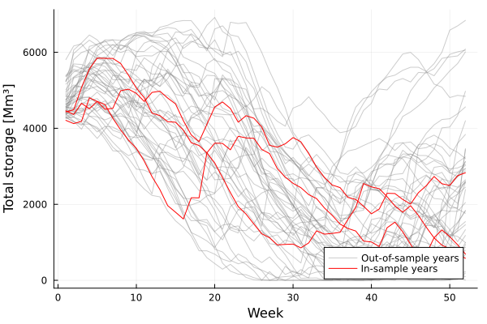
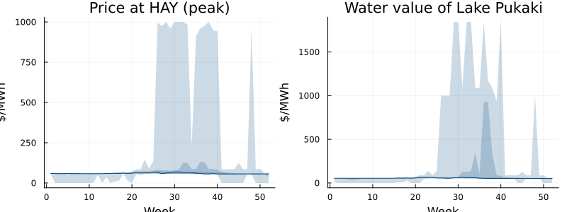
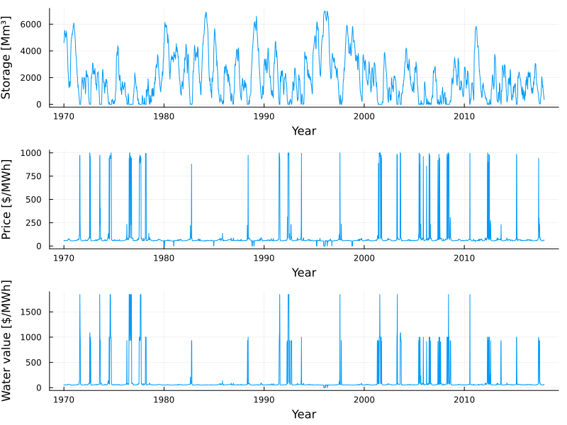

Running JADE
This tutorial was generated using Literate.jl. Download the source as a .jl file. Download the source as a .ipynb file.
The purpose of this tutorial is to show how to build, train, and simulate the JADE model of the New Zealand electricity system.
To keep the tutorial fast enough to run as part of the documentation, we train the policy on a small subset of the historical inflows, and we stop after a small number of iterations. The settings to change for a real run are pointed out as we go.
Packages
This tutorial requires the following packages:
using SDDPimport HiGHSimport PlotsLoading JADE
JADE is not part of the SDDP module. It is a single file in the SDDP.jl repository, which we include to define the module JADE:
JADE_DIR = joinpath(pkgdir(SDDP), "models", "JADE")include(joinpath(JADE_DIR, "JADE.jl"));Data
The input to JADE is a SQLite database. The repository ships the default data as a directory of CSV files, so we convert the directory to a database in a temporary location, and then read it back as a JADE.Data:
data = JADE.Data(; filename = joinpath(mktempdir(), "data.db"), directory = joinpath(JADE_DIR, "data"),)JADE.Data with 15 tablesEach table in the database is a field of data. For example, here are the reservoirs, with their initial and maximum levels in million cubic metres:
data.reservoirs| Row | RESERVOIR | INITIAL_LEVEL | MAX_LEVEL |
|---|---|---|---|
| String | Float64 | Float64 | |
| 1 | Lake_Hawea | 332.074 | 1378.76 |
| 2 | Lake_Pukaki | 2099.87 | 2425.44 |
| 3 | Lake_Taupo | 750.275 | 848.624 |
| 4 | Lake_Tekapo | 397.029 | 823.19 |
| 5 | Lakes_Manapouri_Te_Anau | 688.25 | 1501.88 |
The historical inflows cover 48 years:
years = sort(unique(data.inflows.YEAR))(first(years), last(years))(1970, 2017)Configuration
The options of the model are collected in a JADE.Config. The only required option is the optimizer. We also set inflow_years to the last three years of the record, so that the uncertainty in each week has three realizations instead of 48. This makes the backward pass of SDDP much cheaper. For a real run, leave inflow_years at its default to use every year.
config = JADE.Config(; optimizer = HiGHS.Optimizer, inflow_years = years[(end-2):end],)Main.JADE.Config(HiGHS.Optimizer, 1, 0.95, 500.0, 50.0, 1.0e-6, [2015, 2016, 2017])Training a policy
SDDP.PolicyGraph(data, config) builds the model. The policy graph is cyclic with 52 nodes, one for each week of the year:
model = SDDP.PolicyGraph(data, config)A policy graph with 52 nodes.
Node indices: 1, ..., 52
Here's a visualization of the graph:
# We need `open = false` to build the documentation. Remove if running locally.SDDP.plot(model, "model_jade.html"; open = false)Because the graph is cyclic, a forward pass continues until the discounting terminates it, which takes 20 years on average. To keep each iteration short, we limit the forward pass to one year with max_depth = 104. We also stop after 100 iterations. A real run would use many more iterations, or a different stopping rule; see How to choose a stopping rule.
SDDP.train( model; iteration_limit = 200, log_frequency = 10, sampling_scheme = SDDP.InSampleMonteCarlo(; max_depth = 104),)-------------------------------------------------------------------
SDDP.jl (c) Oscar Dowson and contributors, 2017-26
-------------------------------------------------------------------
problem
nodes : 52
state variables : 5
scenarios : Inf
existing cuts : false
options
solver : serial mode
risk measure : SDDP.Expectation()
sampling scheme : SDDP.InSampleMonteCarlo
subproblem structure
VariableRef : [555, 555]
AffExpr in MOI.EqualTo{Float64} : [98, 98]
AffExpr in MOI.GreaterThan{Float64} : [120, 120]
AffExpr in MOI.LessThan{Float64} : [123, 123]
VariableRef in MOI.EqualTo{Float64} : [37, 37]
VariableRef in MOI.GreaterThan{Float64} : [513, 513]
VariableRef in MOI.LessThan{Float64} : [104, 104]
numerical stability report
matrix range [9e-02, 4e+00]
objective range [1e-03, 1e+00]
bounds range [5e+01, 2e+03]
rhs range [8e+00, 6e+03]
-------------------------------------------------------------------
iteration simulation bound time (s) solves pid
-------------------------------------------------------------------
10 1.858569e+02 5.723999e+02 2.538822e+00 3982 1
20 5.118735e+02 1.009764e+03 4.828079e+00 7964 1
30 5.233406e+02 1.406775e+03 7.169354e+00 11946 1
40 4.705394e+02 1.711716e+03 9.462345e+00 15928 1
50 5.385494e+02 1.991491e+03 1.194216e+01 19910 1
60 5.248564e+02 2.331868e+03 1.458429e+01 24100 1
70 4.678036e+02 2.556683e+03 1.712356e+01 28290 1
80 4.008495e+02 2.710705e+03 1.976388e+01 32480 1
90 4.744970e+02 2.945326e+03 2.238847e+01 36670 1
100 5.346063e+02 3.028956e+03 2.503415e+01 40860 1
110 3.788065e+02 3.197510e+03 2.738759e+01 44842 1
120 4.307938e+02 3.403864e+03 2.986587e+01 49032 1
130 3.662109e+02 3.530208e+03 3.244894e+01 53222 1
140 4.790823e+02 3.622933e+03 3.489925e+01 57204 1
150 4.613940e+02 3.716100e+03 3.741252e+01 61186 1
160 4.510862e+02 3.795434e+03 4.007767e+01 65376 1
170 3.620713e+02 3.868836e+03 4.267620e+01 69358 1
180 3.500926e+02 3.934939e+03 4.539296e+01 73548 1
190 5.972466e+02 4.031221e+03 4.795965e+01 77530 1
200 4.119593e+02 4.078473e+03 5.071898e+01 81720 1
-------------------------------------------------------------------
status : iteration_limit
total time (s) : 5.071898e+01
total solves : 81720
best bound : 4.078473e+03
numeric issues : 1
-------------------------------------------------------------------Simulating the historical years
JADE.simulate wraps SDDP.simulate to record the reservoir storage, the thermal generation, the price of energy at each node, and the marginal value of water in each reservoir.
The default sampling scheme of SDDP.simulate samples the inflows of each week independently. To see how the policy performs on the historical inflow sequences instead, JADE provides two sampling schemes. The first, JADE.HistoricalYears, has one scenario of 52 weeks for each historical year. The scenarios are sampled in order, so we simulate one replication for each:
sampling_scheme = JADE.HistoricalYears(data, config)simulations = JADE.simulate(model, length(sampling_scheme.scenarios); sampling_scheme);length(simulations)48Each simulation is a vector with one dictionary for each week. The storage is a state variable, so it has an incoming and an outgoing value:
simulations[1][1][:x_storage]1-dimensional DenseAxisArray{SDDP.State{Float64},1,...} with index sets:
Dimension 1, ["Lake_Hawea", "Lake_Pukaki", "Lake_Taupo", "Lake_Tekapo", "Lakes_Manapouri_Te_Anau"]
And data, a 5-element Vector{SDDP.State{Float64}}:
SDDP.State{Float64}(332.074, 375.01480000000004)
SDDP.State{Float64}(2099.866, 2166.226932332311)
SDDP.State{Float64}(750.275, 738.54188)
SDDP.State{Float64}(397.0295, 402.09544949120345)
SDDP.State{Float64}(688.25, 943.4756)Let's plot the total storage over the year. Each line is one historical year. The three years that the policy was trained on are highlighted; the other 45 are out-of-sample:
function total_storage(simulation) return [sum(x.out for x in week[:x_storage]) for week in simulation]endin_sample = [year in config.inflow_years for year in years]plt = Plots.plot(; xlabel = "Week", ylabel = "Total storage [Mm³]", legend = :bottomright,)for (i, simulation) in enumerate(simulations) Plots.plot!( plt, total_storage(simulation); color = in_sample[i] ? :red : :gray, alpha = in_sample[i] ? 1.0 : 0.4, label = i == findfirst(in_sample) ? "In-sample years" : i == findfirst(.!in_sample) ? "Out-of-sample years" : "", )endplt
The prices and the marginal water values are recorded in $/MWh. A SDDP.publication_plot shows the distribution across the 48 years of the price at the Haywards node in the peak load block, and of the marginal value of water in Lake Pukaki:
Plots.plot( SDDP.publication_plot( simulations; title = "Price at HAY (peak)", ylabel = "\$/MWh", ) do week return week[:price]["HAY", "PEAK"] end, SDDP.publication_plot( simulations; title = "Water value of Lake Pukaki", ylabel = "\$/MWh", ) do week return week[:marginal_water_value]["Lake_Pukaki"] end; xlabel = "Week", layout = (1, 2), size = (800, 300),)
Simulating the historical sequence
The second sampling scheme, JADE.HistoricalSequence, has a single scenario that runs through the whole historical record, from week 1 of 1970 to week 52 of 2017. It shows how the reservoirs would have been managed over the 48 years if the policy had been in place:
sampling_scheme = JADE.HistoricalSequence(data, config)simulation = only(JADE.simulate(model, 1; sampling_scheme));length(simulation)2496The storage, the price, and the water value over the 48 years are:
t = first(years) .+ (0:(length(simulation)-1)) ./ 52Plots.plot( Plots.plot(t, total_storage(simulation); ylabel = "Storage [Mm³]"), Plots.plot( t, [week[:price]["HAY", "PEAK"] for week in simulation]; ylabel = "Price [\$/MWh]", ), Plots.plot( t, [week[:marginal_water_value]["Lake_Pukaki"] for week in simulation]; ylabel = "Water value [\$/MWh]", ); xlabel = "Year", layout = (3, 1), legend = false, size = (800, 600),)
The policy was trained on only three years of inflows and 100 iterations, so it should not be read as a good policy for the New Zealand system. The spikes in the price are weeks in which the policy sheds load. To improve the policy, train on every year and for many more iterations.